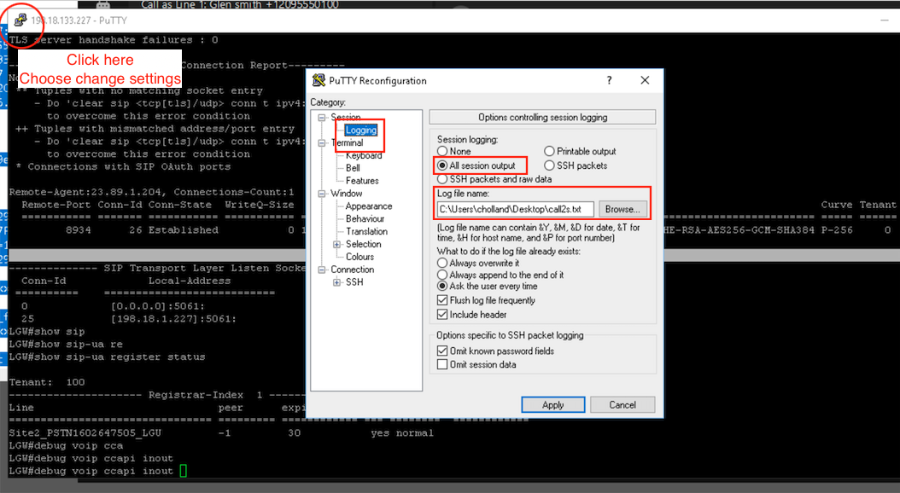

Lab Debug Calls through Local Gateway
This document will show you how to debug the calls through the local gateway and verify correct operation. Use this guide to troubleshoot your own implementations!
Step 1 – TLS Registration
Show sip-ua connections tcp tls detail
{kind=link}
Step 2 – SIP Trunk Registration
show sip-ua register status
{kind=link}
{kind=link}
Step 3 – Dial Peer Selection
With the above steps completed, the next step is to debug the dial peers on the gateway itself to see what is happening. Issue the command
debug voip ccapi inout
This will enable debugging. You can either ensure Terminal monitor is enabled, and log your session output to a file – or you can set the following commands and use show log to see the output of your tests.
conf t
no logging console
no logging monitor
logging buffer 999999 debug
end
undebug all
Debug voip ccapi inout
{kind=link}

Make a call out to pstn, and check the resulting log file. First, we want to look for some text like the below. Filter on the word “incoming” and ensure the correct dial peer is selected (In this case, 100) If it is not, check your incoming URI is correctly specifying the relevant DTG – Details on this below.
Code
\Sep 16 12:40:18.572: //-1/AA290F15808C/CCAPI/cc\_api\_call\_setup\_ind\_common:
Interface=0x7FE8742E8208, Call Info(
Calling Number=12095550100,(Calling Name=)(TON=Unknown, NPI=Unknown, Screening=User, Passed, Presentation=Allowed),
Called Number=13157244022(TON=Unknown, NPI=Unknown),
Calling Translated=FALSE, Subscriber Type Str=Unknown, FinalDestinationFlag=TRUE,
Incoming Dial-peer=100, Progress Indication=NULL(0), Calling IE Present=TRUE,
Source Trkgrp Route Label=, Target Trkgrp Route Label=, CLID Transparent=FALSE), Call Id=208
To check the correct DPG, enable debug ccsip messages and look for the following text in the inbound SIP invite, ensure it matches your voice class uri 100 sip configuration
Code
\Sep 16 12:40:18.567: //-1/xxxxxxxxxxxx/SIP/Msg/ccsipDisplayMsg:
Received:
INVITE sip:13157244022@198.18.133.227:5061;transport=tls;
voice class uri 100 sip
pattern dtg=site2_pstn0547184497_lgu
With the correct inbound dial peer now selected, let’s check our outbound dial-peer. Look for the following messages in the debug
Code
\Sep 16 12:40:18.574: //208/AA290F15808C/CCAPI/ccCallSetupRequest:
Destination=, Calling IE Present=TRUE, Mode=0,
If you do not see it, check the configuration of your inbound dial peer has the DPG Set, and the DPG Specifies the outgoing dial peer of 900. This ensures that any calls coming in to dial-peer 100 will automatically be pushed to dial-peer 900 regardless of the digits dialed. The important parts are highlighted in red.
voice class dpg 100
description INCOMING FROM WXC OUT TO PSTN
dial-peer 900 preference 1
dial-peer voice 100 voip
description Inbound/Outbound Webex Calling
max-conn 250
destination-pattern BAD.BAD
session protocol sipv2
session target sip-server
destination dpg 100
incoming uri request 100
voice-class codec 100
voice-class stun-usage 100
no voice-class sip localhost
voice-class sip tenant 100
dtmf-relay rtp-nte
srtp
no vad
dial-peer voice 900 voip
description OUTBOUND PSTN PROVIDER
destination-pattern BAD.BAD
session protocol sipv2
session target ipv4:198.18.133.3
voice-class codec 100
dtmf-relay rtp-nte
no vad
Once we have confirmed correct dial-peer selection, we can move on to SIP message debugging.
Step 4 – SIP Messages
The final stage is the ensure the correct SIP Messages are being exchanged. For this, it’s useful to use a tool called translatorX https://translatorx.org/downloads.html
Leave your Putty session logging all session output to a file, and enable the debug command Debug ccsip messages
Make an outbound call to PSTN and hang up. Now copy the text from the log file into translatorX, or drag the file and drop it into the translatorX window. You will see the SIP Messages represented on screen. Below is an example of a failing call scenario. We can see some looping of messaging going on.
{kind=link}
If you click the “Generate diagram” button in the bottom right, we can see a graphical representation of the call flow, where we can start to see what messages are being sent, and from where more easily. This will assist in debugging / troubleshooting issues.
{kind=link}
Longer Extension length and National numbers
Curious
With the inclusion of Extensions up to 10 digits, the chance for overlap on National PSTN numbering becomes more prevalent. If the extension exists on Webex Calling, the call will route to the extension number instead of PSTN. If the extension number exists over a Local Gateway trunk on UCM or similar, the call will route to PSTN instead of the extension number. Be aware the behaviour changes depending where the number resides!
Outbound - If an extension is same as the national number, then the extension takes precedence over the national number. Hence, we recommend that you enable the outbound dial digit to guarantee PSTN egress, as a defined extension could overlap with a “real” Telephone number. See Outbound Dial Digit and Permissive dialing. Inbound – Extensions cannot be used as destinations for inbound PSTN but Webex Calling does provide normalization for some country dial plans to convert a national number to a E164, e.g. US national 10 digit number. If longer extension lengths are used this could conflict with the PSTN dial plan and provide incorrect call classification and failure. In this scenario: PSTN inbound must be normalized to E164 inbound to Webex Calling. This is done automatically by Cloud Connected PSTN. For LGW and Unknown routing to Premise enabled on a Trunk, a large extension length could lead to incorrect Call Classification of Premises and External Calls if E164 is not used for PSTN To and From. See Calls to On-Premise Extensions Maximum Unknown Extension Length
Dial Plan Behavior – Outside Access Codes & Translation Patterns
Consider the below diagram. Note that translation patterns will not be considered if the outbound dial digit has been previously stripped. As such, you should not translate from numbers, and to numbers that both include an outbound dial digit, as it only gets stripped once.
{kind=link}
{kind=link}
Useful Debugging Commands
Code
Show sip-ua connections tcp tls detail
Displays status of TCP connection
Show sip-ua register status
Displays status of SIP Trunks over TCP connection
Debug ccsip messages
Debugs SIP messages
Debug voice ccapi inout
Debugs dial-peer matching logic
Show voip ice summary
Short summary of ICE sessions
Show voip ice instance call-id XXXXXX
Detailed info on ICE Sessions
Show sip-ua calls brief
Shows info on active calls, including media IP’s for ICE troubleshooting
Debug voip icelib inout
Debug ICE Negotiations